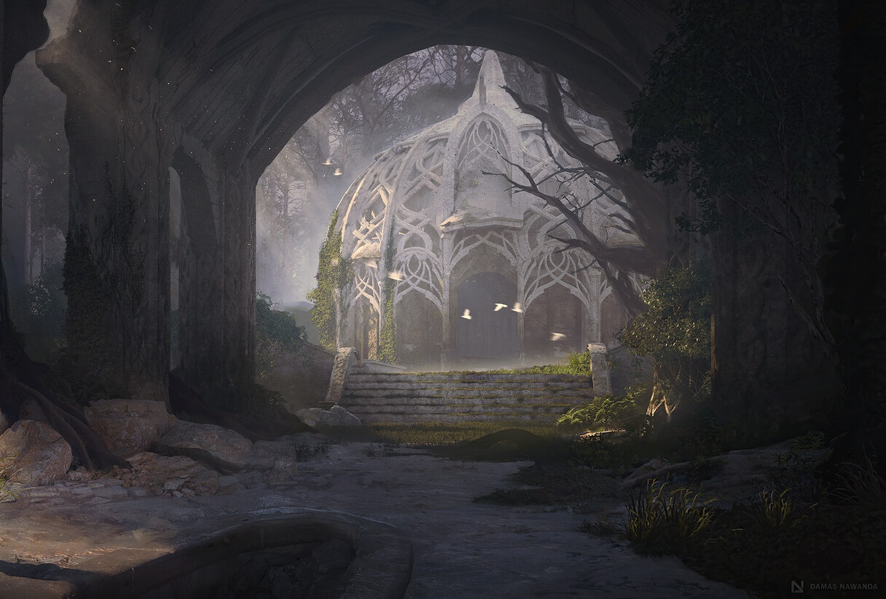

|  |
NaloréNaloré est le dernier sanctuaire des elfes du crépuscule, un campement entouré de majestueux arbres aux feuilles argentées. Les ruines de marbre blanc, autrefois partie de la civilisation florissante des elfes du crépuscules, sont aujourd’hui envahies par la nature. Ce lieu est un refuge exclusivement féminin, après que Strahd von Zarovich ait fait exécuter tous les hommes elfes. Les survivantes, menées par Elarya Tisserêve, luttent pour survire en Barovie. Naloré est un endroit empreint de beauté et de tristesse, où la magie elfique maintient un fragile équilibre face aux ombres qui rôdent. |